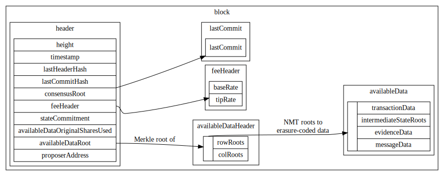

LazyLedger Specifications
Specification
Architecture
Common Terms and Expressions
| name | description |
|---|---|
| App (application) | Alternate name for "virtual sidechain." LazyLedger apps are sidechains that post all their data onto the LazyLedger chain to share security. |
| Transaction | Request that modifies the consensus-critical state (validator balances and statuses). |
| Message | Request that is executed by a non-consensus-critical app. |
System Architecture
LazyLedger has a minimal state: the validator set (account balances, validator status, etc.). Changes to the validator set are done with native transactions, distinct from the messages processed by apps. Transactions are signed and must be processed by clients to determine the validator set, while messages are un-signed data blobs that will usually represent an app's block data.
Transactions pay fees similarly to how they would in a normal blockchain (e.g. Bitcoin), and their side effects are restricted to modifying the validator set and their balances. Transactions can additionally pay fees for the inclusion of a message (identified by a hash) in the same block. The validator set is committed to in the block header, and since the entire system state is the validator set, this is the only state commitment needed in the header.
One desideratum that will most likely be included is burning a non-proportional amount of coins for each transaction as a network fee. This provides baseline demand for the native coin: as the chain is used more, more coins must be bought then burned to pay for fees.
This architecture has the benefit of allowing a spectrum of clients. Since different components are made available through commitments, client that are only interested in a portion of the block data do not need to download and process the whole block.
Non-consensus full clients have easy and direct access to all the data they need to validate: the transactions. Messages do not need to be validated, as they do not change the state, they simply need to be verified as available.
Light clients are almost identical to full clients here: they simply need to process all the validator set changes (i.e. transactions) and run data availability checks on the rest of the block. Unlike full clients, light clients do not need to verify the signatures of transactions and can instead trust the majority of validators to sign off on validator set changes, with the addition of fraud proofs in case of an invalid signature.
Data Structures
- Data Structures Overview
- Type Aliases
- Blockchain Data Structures
- ConsensusVersion
- Serialization
- Hashing
- Public-Key Cryptography
- Merkle Trees
- Erasure Coding
- Available Data
- TransactionData
- WrappedTransaction
- Transaction
- SignedTransactionData
- SignedTransactionDataTransfer
- SignedTransactionDataPayForMessage
- SignedTransactionDataCreateValidator
- SignedTransactionDataBeginUnbondingValidator
- SignedTransactionDataUnbondValidator
- SignedTransactionDataCreateDelegation
- SignedTransactionDataBeginUnbondingDelegation
- SignedTransactionDataUnbondDelegation
- SignedTransactionDataBurn
- SignedTransactionRedelegateCommission
- SignedTransactionRedelegateReward
- IntermediateStateRootData
- EvidenceData
- MessageData
- TransactionData
- State
- Consensus Parameters
Data Structures Overview

Type Aliases
| name | type |
|---|---|
Address | byte[32] |
Amount | uint64 |
Graffiti | byte[MAX_GRAFFITI_BYTES] |
HashDigest | byte[32] |
Height | int64 |
NamespaceID | byte[NAMESPACE_ID_BYTES] |
Nonce | uint64 |
Round | int32 |
StateSubtreeID | byte |
Timestamp | google.protobuf.Timestamp |
VotingPower | uint64 |
Blockchain Data Structures
Block
Blocks are the top-level data structure of the LazyLedger blockchain.
| name | type | description |
|---|---|---|
header | Header | Block header. Contains primarily identification info and commitments. |
availableDataHeader | AvailableDataHeader | Header of available data. Contains commitments to erasure-coded data. |
availableData | AvailableData | Data that is erasure-coded for availability. |
lastCommit | Commit | Previous block's Tendermint commit. |
Header
Block header, which is fully downloaded by both full clients and light clients.
| name | type | description |
|---|---|---|
version | ConsensusVersion | The consensus version struct. |
chainID | string | The CHAIN_ID. |
height | Height | Block height. The genesis block is at height 1. |
timestamp | Timestamp | Timestamp of this block. |
lastHeaderHash | HashDigest | Previous block's header hash. |
lastCommitHash | HashDigest | Previous block's Tendermint commit hash. |
consensusHash | HashDigest | Hash of consensus parameters for this block. |
stateCommitment | HashDigest | The state root after this block's transactions are applied. |
availableDataOriginalSharesUsed | uint64 | The number of shares used in the original data square that are not tail padding. |
availableDataRoot | HashDigest | Root of commitments to erasure-coded data. |
proposerAddress | Address | Address of this block's proposer. |
The size of the original data square, availableDataOriginalSquareSize, isn't explicitly declared in the block header. Instead, it is implicitly computed as the smallest power of 2 whose square is at least availableDataOriginalSharesUsed (in other words, the smallest power of 4 that is at least availableDataOriginalSharesUsed).
The header hash is the hash of the serialized header.
AvailableDataHeader
| name | type | description |
|---|---|---|
rowRoots | HashDigest[] | Commitments to all erasure-coded data. |
colRoots | HashDigest[] | Commitments to all erasure-coded data. |
The number of row/column roots of the original data shares in square layout for this block. The availableDataRoot of the header is computed using the compact row and column roots as described here.
The number of row and column roots is each availableDataOriginalSquareSize * 2, and must be a power of 2. Note that the minimum availableDataOriginalSquareSize is 1 (not 0), therefore the number of row and column roots are each at least 2.
Implementations can prune rows containing only tail padding as they are implicitly available.
AvailableData
Data that is erasure-coded for data availability checks.
| name | type | description |
|---|---|---|
transactionData | TransactionData | Transaction data. Transactions modify the validator set and balances, and pay fees for messages to be included. |
intermediateStateRootData | IntermediateStateRootData | Intermediate state roots used for fraud proofs. |
evidenceData | EvidenceData | Evidence used for slashing conditions (e.g. equivocation). |
messageData | MessageData | Message data. Messages are app data. |
Commit
| name | type | description |
|---|---|---|
height | Height | Block height. |
round | Round | Round. Incremented on view change. |
headerHash | HashDigest | Header hash of the previous block. |
signatures | CommitSig[] | List of signatures. |
Timestamp
Timestamp is a type alias.
LazyLedger uses google.protobuf.Timestamp to represent time.
HashDigest
HashDigest is a type alias.
Output of the hashing function. Exactly 256 bits (32 bytes) long.
TransactionFee
| name | type | description |
|---|---|---|
tipRate | uint64 | The tip rate for this transaction. |
Abstraction over transaction fees.
Address
Address is a type alias.
Addresses are the hash digest of the public key.
Addresses have a length of 32 bytes.
CommitSig
enum CommitFlag : uint8_t {
CommitFlagAbsent = 1,
CommitFlagCommit = 2,
CommitFlagNil = 3,
};
| name | type | description |
|---|---|---|
commitFlag | CommitFlag | |
validatorAddress | Address | |
timestamp | Timestamp | |
signature | Signature |
Signature
| name | type | description |
|---|---|---|
r | byte[32] | r value of the signature. |
vs | byte[32] | 1-bit v value followed by last 255 bits of s value of signature. |
Output of the signing process.
ConsensusVersion
| name | type | description |
|---|---|---|
block | uint64 | The VERSION_BLOCK. |
app | uint64 | The VERSION_APP. |
Serialization
Objects that are committed to or signed over require a canonical serialization. This is done using a deterministic (and thus, bijective) variant of protobuf defined here.
Note: there are two requirements for a serialization scheme, should this need to be changed:
- Must be bijective.
- Serialization must include the length of dynamic structures (e.g. arrays with variable length).
Hashing
All protocol-level hashing is done using SHA-2-256 as defined in FIPS 180-4. SHA-2-256 outputs a digest that is 256 bits (i.e. 32 bytes) long.
Libraries implementing SHA-2-256 are available in Go (https://pkg.go.dev/crypto/sha256) and Rust (https://docs.rs/sha2).
Unless otherwise indicated explicitly, objects are first serialized before being hashed.
Public-Key Cryptography
Consensus-critical data is authenticated using ECDSA, with the curve secp256k1. A highly-optimized library is available in C (https://github.com/bitcoin-core/secp256k1), with wrappers in Go (https://pkg.go.dev/github.com/ethereum/go-ethereum/crypto/secp256k1) and Rust (https://docs.rs/crate/secp256k1).
Public keys are encoded in uncompressed form, as the concatenation of the x and y values. No prefix is needed to distinguish between encoding schemes as this is the only encoding supported.
Deterministic signatures (RFC-6979) should be used when signing, but this is not enforced at the protocol level as it cannot be.
Signatures are represented as the r and s (each 32 bytes), and v (1-bit) values of the signature. r and s take on their usual meaning (see: SEC 1, 4.1.3 Signing Operation), while v is used for recovering the public key from a signature more quickly (see: SEC 1, 4.1.6 Public Key Recovery Operation). Only low-s values in signatures are valid (i.e. s <= secp256k1.n//2); s can be replaced with -s mod secp256k1.n during the signing process if it is high. Given this, the first bit of s will always be 0, and can be used to store the 1-bit v value.
v represents the parity of the Y component of the point, 0 for even and 1 for odd. The X component of the point is assumed to always be low, since the possibility of it being high is negligible.
Putting it all together, the encoding for signatures is:
| 32 bytes || 32 bytes |
[256-bit r value][1-bit v value][255-bit s value]
This encoding scheme is derived from EIP 2098: Compact Signature Representation.
Merkle Trees
Merkle trees are used to authenticate various pieces of data across the LazyLedger stack, including transactions, messages, the validator set, etc. This section provides an overview of the different tree types used, and specifies how to construct them.
Binary Merkle Tree
Binary Merkle trees are constructed in the same fashion as described in Certificate Transparency (RFC-6962), except for using a different hashing function. Leaves are hashed once to get leaf node values and internal node values are the hash of the concatenation of their children (either leaf nodes or other internal nodes).
Nodes contain a single field:
| name | type | description |
|------|---------------------------|-------------|
| v | HashDigest | Node value. |
The base case (an empty tree) is defined as the hash of the empty string:
node.v = 0xe3b0c44298fc1c149afbf4c8996fb92427ae41e4649b934ca495991b7852b855
For leaf node node of leaf data d:
node.v = h(0x00, serialize(d))
For internal node node with children l and r:
node.v = h(0x01, l.v, r.v)
Note that rather than duplicating the last node if there are an odd number of nodes (the Bitcoin design), trees are allowed to be imbalanced. In other words, the height of each leaf may be different. For an example, see Section 2.1.3 of Certificate Transparency (RFC-6962).
Leaves and internal nodes are hashed differently: the one-byte 0x00 is prepended for leaf nodes while 0x01 is prepended for internal nodes. This avoids a second-preimage attack where internal nodes are presented as leaves trees with leaves at different heights.
BinaryMerkleTreeInclusionProof
| name | type | description |
|---|---|---|
siblings | HashDigest[] | Sibling hash values, ordered starting from the leaf's neighbor. |
A proof for a leaf in a binary Merkle tree, as per Section 2.1.1 of Certificate Transparency (RFC-6962).
Namespace Merkle Tree
Shares in LazyLedger are associated with a provided namespace ID. The Namespace Merkle Tree (NMT) is a variation of the Merkle Interval Tree, which is itself an extension of the Merkle Sum Tree. It allows for compact proofs around the inclusion or exclusion of shares with particular namespace IDs.
Nodes contain three fields:
| name | type | description |
|---------|------------------------------|--------------------------------------------------|
| n_min | NamespaceID | Min namespace ID in subtree rooted at this node. |
| n_max | NamespaceID | Max namespace ID in subtree rooted at this node. |
| v | HashDigest | Node value. |
The base case (an empty tree) is defined as:
node.n_min = 0x0000000000000000
node.n_max = 0x0000000000000000
node.v = 0xe3b0c44298fc1c149afbf4c8996fb92427ae41e4649b934ca495991b7852b855
For leaf node node of share data d:
node.n_min = d.namespaceID
node.n_max = d.namespaceID
node.v = h(0x00, d.rawData)
The namespaceID message field here is the namespace ID of the leaf, which is a NAMESPACE_ID_BYTES-long byte array.
Leaves in an NMT must be lexicographically sorted by namespace ID in ascending order.
For internal node node with children l and r:
node.n_min = min(l.n_min, r.n_min)
if l.n_min == PARITY_SHARE_NAMESPACE_ID
node.n_max = PARITY_SHARE_NAMESPACE_ID
else if r.n_min == PARITY_SHARE_NAMESPACE_ID
node.n_max = l.n_max
else
node.n_max = max(l.n_max, r.n_max)
node.v = h(0x01, l.n_min, l.n_max, l.v, r.l_min, r.l_max, r.v)
Note that the above snippet leverages the property that leaves are sorted by namespace ID: if l.n_min is PARITY_SHARE_NAMESPACE_ID, so must {l,r}.n_max. By construction, either both the min and max namespace IDs of a node will be PARITY_SHARE_NAMESPACE_ID, or neither will: if r.n_min is PARITY_SHARE_NAMESPACE_ID, so must r.n_max.
For some intuition: the min and max namespace IDs for subtree roots with at least one non-parity leaf (which includes the root of an NMT, as the right half of an NMT as used in LazyLedger will be parity shares) ignore the namespace ID for the parity leaves. Subtree roots with only parity leaves have their min and max namespace ID set to PARITY_SHARE_NAMESPACE_ID. This allows for shorter proofs into the tree than if the namespace ID of parity shares was not ignored (which would cause the max namespace ID of the root to always be PARITY_SHARE_NAMESPACE_ID).
A compact commitment can be computed by taking the hash of the serialized root node.
NamespaceMerkleTreeInclusionProof
| name | type | description |
|---|---|---|
siblingValues | HashDigest[] | Sibling hash values, ordered starting from the leaf's neighbor. |
siblingMins | NamespaceID[] | Sibling min namespace IDs. |
siblingMaxes | NamespaceID[] | Sibling max namespace IDs. |
When verifying an NMT proof, the root hash is checked by reconstructing the root node root_node with the computed root_node.v (computed as with a plain Merkle proof) and the provided rootNamespaceIDMin and rootNamespaceIDMax as the root_node.n_min and root_node.n_max, respectively.
Sparse Merkle Tree
Sparse Merkle Trees (SMTs) are sparse, i.e. they contain mostly empty leaves. They can be used as key-value stores for arbitrary data, as each leaf is keyed by its index in the tree. Storage efficiency is achieved through clever use of implicit defaults, avoiding the need to store empty leaves.
Additional rules are added on top of plain binary Merkle trees:
- Default values are given to leaf nodes with empty leaves.
- While the above rule is sufficient to pre-compute the values of intermediate nodes that are roots of empty subtrees, a further simplification is to extend this default value to all nodes that are roots of empty subtrees. The 32-byte zero, i.e.
0x0000000000000000000000000000000000000000000000000000000000000000, is used as the default value. This rule takes precedence over the above one. - The number of hashing operations can be reduced to be logarithmic in the number of non-empty leaves on average, assuming a uniform distribution of non-empty leaf keys. An internal node that is the root of a subtree that contains exactly one non-empty leaf is replaced by that leaf's leaf node.
Nodes contain a single field:
| name | type | description |
|------|---------------------------|-------------|
| v | HashDigest | Node value. |
The base case (an empty tree) is defined as the hash of the empty string:
node.v = 0xe3b0c44298fc1c149afbf4c8996fb92427ae41e4649b934ca495991b7852b855
For leaf node node of leaf data d with key k:
node.v = h(0x00, k, h(serialize(d)))
The key of leaf nodes must be prepended, since the index of a leaf node that is not at maximum depth cannot be determined without this information. Leaf values are hashed so that they do not need to be included in full in non-membership proofs.
For internal node node with children l and r:
node.v = h(0x01, l.v, r.v)
SparseMerkleTreeInclusionProof
SMTs can further be extended with compact proofs. Merkle proofs are composed, among other things, of a list of sibling node values. We note that, since nodes that are roots of empty subtrees have known values (the default value), these values do not need to be provided explicitly; it is sufficient to simply identify which siblings in the Merkle branch are roots of empty subtrees, which can be done with one bit per sibling.
For a Merkle branch of height h, an h-bit value is appended to the proof. The lowest bit corresponds to the sibling of the leaf node, and each higher bit corresponds to the next parent. A value of 1 indicates that the next value in the list of values provided explicitly in the proof should be used, and a value of 0 indicates that the default value should be used.
A proof into an SMT is structured as:
| name | type | description |
|---|---|---|
depth | uint16 | Depth of the leaf node. The root node is at depth 0. Must be <= 256. |
siblings | HashDigest[] | Sibling hash values, ordered starting from the leaf's neighbor.. |
includedSiblings | byte[32] | Bitfield of explicitly included sibling hashes. |
The includedSiblings is ordered by most-significant-byte first, with each byte ordered by most-significant-bit first. The lowest bit corresponds the leaf node level.
Erasure Coding
In order to enable trust-minimized light clients (i.e. light clients that do not rely on an honest majority of validating state assumption), it is critical that light clients can determine whether the data in each block is available or not, without downloading the whole block itself. The technique used here was formally described in the paper Fraud and Data Availability Proofs: Maximising Light Client Security and Scaling Blockchains with Dishonest Majorities.
The remainder of the subsections below specify the 2D Reed-Solomon erasure coding scheme used, along with the format of shares and how available data is arranged into shares.
Reed-Solomon Erasure Coding
Note that while data is laid out in a two-dimensional square, rows and columns are erasure coded using a standard one-dimensional encoding.
Reed-Solomon erasure coding is used as the underlying coding scheme. The parameters are:
- 16-bit Galois field
availableDataOriginalSquareSizeoriginal pieces (maximum ofAVAILABLE_DATA_ORIGINAL_SQUARE_MAX)availableDataOriginalSquareSizeparity pieces (maximum ofAVAILABLE_DATA_ORIGINAL_SQUARE_MAX) (i.eavailableDataOriginalSquareSize * 2total pieces), for an erasure efficiency of 50%. In other words, any 50% of the pieces from theavailableDataOriginalSquareSize * 2total pieces are enough to recover the original data.SHARE_SIZEbytes per piece
Note that availableDataOriginalSquareSize may vary each block, and is decided by the block proposer of that block. Leopard-RS is a C library that implements the above scheme with quasilinear runtime.
2D Reed-Solomon Encoding Scheme
The 2-dimensional data layout is described in this section. The roots of NMTs for each row and column across four quadrants of data in a 2k * 2k matrix of shares, Q0 to Q3 (shown below), must be computed. In other words, 2k row roots and 2k column roots must be computed. The row and column roots are stored in the availableDataCommitments of the AvailableDataHeader.

The data of Q0 is the original data, and the remaining quadrants are parity data. Setting k = availableDataOriginalSquareSize, the original data first must be split into shares and arranged into a k * k matrix. Then the parity data can be computed.
Where A -> B indicates that B is computed using erasure coding from A:
Q0 -> Q1for each row inQ0andQ1Q0 -> Q2for each column inQ0andQ2Q2 -> Q3for each row inQ2andQ3

As an example, the parity data in the second column of Q2 (in striped purple) is computed by extending the original data in the second column of Q0 (in solid blue).

Now that all four quadrants of the 2k * 2k matrix are filled, the row and column roots can be computed. To do so, each row/column is used as the leaves of a NMT, for which the compact root is computed (i.e. an extra hash operation over the NMT root is used to produce a single HashDigest). In this example, the fourth row root value is computed as the NMT root of the fourth row of Q0 and the fourth row of Q1 as leaves.

Finally, the availableDataRoot of the block Header is computed as the Merkle root of the binary Merkle tree with the row and column roots as leaves, in that order.

Invalid Erasure Coding
If a malicious block producer incorrectly computes the 2D Reed-Solomon code for a block's data, a fraud proof for this can be presented.
ShareProof
| name | type | description |
|---|---|---|
share | Share | The share. |
proof | NamespaceMerkleTreeProof | The Merkle proof of the share in availableDataRoot. |
isCol | bool | A Boolean indicating if the proof is from a row root or column root; false if it is a row root. |
position | uint64 | The index of the share in the offending row or column. |
BadEncodingFraudProof
| name | type | description |
|---|---|---|
shareProofs | ShareProof[] | The available shares in the offending row or column. |
root | HashDigest | The Merkle root of the offending row or column. |
proof | NamespaceMerkleTreeProof | The Merkle proof of the row or column root in availableDataRoot. |
isCol | bool | A Boolean indicating if it is an offending row or column; false if it is a row. |
position | uint64 | The index of the row or column in the square. |
Share
| name | type | description |
|---|---|---|
namespaceID | NamespaceID | Namespace ID of the share. |
rawData | byte[SHARE_SIZE] | Raw share data. |
A share is a fixed-size data chunk associated with a namespace ID, whose data will be erasure-coded and committed to in Namespace Merkle trees.
A share's raw data rawData is interpreted differently depending on the namespace ID.
For shares with a reserved namespace ID through NAMESPACE_ID_MAX_RESERVED:
- The first
NAMESPACE_ID_BYTESof a share's raw datarawDatais the namespace ID of that share,namespaceID. - The next
SHARE_RESERVED_BYTESbytes (the*in the example layout figure below) is the starting byte of the length of the canonically serialized first request that starts in the share, or0if there is none, as a one-byte big-endian unsigned integer (i.e. canonical serialization is not used). In this example, with a share size of256the first byte would be80(or0x50in hex). - The remaining
SHARE_SIZE-NAMESPACE_ID_BYTES-SHARE_RESERVED_BYTESbytes are request data.

For shares with a namespace ID above NAMESPACE_ID_MAX_RESERVED but below PARITY_SHARE_NAMESPACE_ID:
- The first
NAMESPACE_ID_BYTESof a share's raw datarawDatais the namespace ID of that share,namespaceID. - The remaining
SHARE_SIZE-NAMESPACE_ID_BYTESbytes are request data. In other words, the remaining bytes have no special meaning and are simply used to store data.
For shares with a namespace ID equal to PARITY_SHARE_NAMESPACE_ID (i.e. parity shares):
- Bytes carry no special meaning.
For non-parity shares, if there is insufficient request data to fill the share, the remaining bytes are filled with 0.
Arranging Available Data Into Shares
The previous sections described how some original data, arranged into a k * k matrix, can be extended into a 2k * 2k matrix and committed to with NMT roots. This section specifies how available data (which includes transactions, intermediate state roots, evidence, and messages) is arranged into the matrix in the first place.
Then,
- For each of
transactionData,intermediateStateRootData, andevidenceData, serialize:- For each request in the list:
- Serialize the request (individually).
- Compute the length of each serialized request, serialize the length, and pre-pend the serialized request with its serialized length.
- Split up the length/request pairs into
SHARE_SIZE-NAMESPACE_ID_BYTES-SHARE_RESERVED_BYTES-byte chunks. - Create a share out of each chunk. This data has a reserved namespace ID, so the first
NAMESPACE_ID_BYTES+SHARE_RESERVED_BYTESbytes for these shares must be set specially.
- For each request in the list:
- Concatenate the lists of shares in the order: transactions, intermediate state roots, evidence.
Note that by construction, each share only has a single namespace, and that the list of concatenated shares is lexicographically ordered by namespace ID.
These shares are arranged in the first quadrant (Q0) of the availableDataOriginalSquareSize*2 * availableDataOriginalSquareSize*2 available data matrix in row-major order. In the example below, each reserved data element takes up exactly one share.

Each message in the list messageData:
- Serialize the message (individually).
- Compute the length of each serialized message, serialize the length, and pre-pend the serialized message with its serialized length.
- Split up the length/message pairs into
SHARE_SIZE-NAMESPACE_ID_BYTES-byte chunks. - Create a share out of each chunk. The first
NAMESPACE_ID_BYTESbytes for these shares is set to the namespace ID.
For each message, it is placed in the available data matrix, with row-major order, as follows:
- Place the first share of the message at the next unused location in the matrix, then place the remaining shares in the following locations.
Transactions must commit to a Merkle root of a list of hashes that are each guaranteed (assuming the block is valid) to be subtree roots in one or more of the row NMTs. For additional info, see the rationale document for this section.
However, with only the rule above, interaction between the block producer and transaction sender may be required to compute a commitment to the message the transaction sender can sign over. To remove interaction, messages can optionally be laid out using a non-interactive default:
- Place the first share of the message at the next unused location in the matrix whose column in aligned with the largest power of 2 that is not larger than the message length or
availableDataOriginalSquareSize, then place the remaining shares in the following locations unless there are insufficient unused locations in the row. - If there are insufficient unused locations in the row, place the first share of the message at the first column of the next row. Then place the remaining shares in the following locations. By construction, any message whose length is greater than
availableDataOriginalSquareSizewill be placed in this way.
In the example below, two messages (of lengths 2 and 1, respectively) are placed using the aforementioned default non-interactive rules.

The non-interactive default rules may introduce empty shares that do not belong to any message (in the example above, the top-right share is empty). These are zeroes with namespace ID equal to the either TAIL_TRANSACTION_PADDING_NAMESPACE_ID if between a request with a reserved namespace ID and a message, or the namespace ID of the previous message if succeeded by a message. See the rationale doc for more info.
Available Data
TransactionData
| name | type | description |
|---|---|---|
wrappedTransactions | WrappedTransaction[] | List of wrapped transactions. |
WrappedTransaction
Wrapped transactions include additional metadata by the block proposer that is committed to in the available data matrix.
| name | type | description |
|---|---|---|
index | uint64 | Index of this transaction in the list of wrapped transactions. This information is lost when splitting transactions into fixed-sized shares, and needs to be re-added here for fraud proof support. Allows linking a transaction to an intermediate state root. |
transaction | Transaction | Actual transaction. |
messageStartIndex | uint64 | Optional, only used if transaction pays for a message or padding. Share index (in row-major order) of first share of message this transaction pays for. Needed for light verification of proper message inclusion. |
Transaction
| name | type | description |
|---|---|---|
signedTransactionData | SignedTransactionData | Data payload that is signed over. |
signature | Signature | Signature. |
SignedTransactionData
enum TransactionType : uint8_t {
Transfer = 1,
PayForMessage = 2,
CreateValidator = 3,
BeginUnbondingValidator = 4,
UnbondValidator = 5,
CreateDelegation = 6,
BeginUnbondingDelegation = 7,
UnbondDelegation = 8,
Burn = 9,
RedelegateCommission = 10,
RedelegateReward = 11,
};
Signed transaction data comes in a number of types:
- Transfer
- PayForMessage
- CreateValidator
- BeginUnbondingValidator
- UnbondValidator
- CreateDelegation
- BeginUnbondingDelegation
- UnbondDelegation
- Burn
- RedelegateCommission
- RedelegateReward
Common fields are denoted here to avoid repeating descriptions:
| name | type | description |
|---|---|---|
type | TransactionType | Type of the transaction. Each type indicates a different state transition. |
amount | Amount | Amount of coins to send, in 1u. |
to | Address | Recipient's address. |
fee | TransactionFee | The fee information for this transaction. |
nonce | Nonce | Nonce of sender. |
SignedTransactionDataTransfer
| name | type | description |
|---|---|---|
type | TransactionType | Must be TransactionType.Transfer. |
amount | Amount | |
to | Address | |
fee | TransactionFee | |
nonce | Nonce |
Transfers amount coins to to.
SignedTransactionDataPayForMessage
| name | type | description |
|---|---|---|
type | TransactionType | Must be TransactionType.PayForMessage. |
fee | TransactionFee | |
nonce | Nonce | |
messageNamespaceID | NamespaceID | Namespace ID of message this transaction pays a fee for. |
messageSize | uint64 | Size of message this transaction pays a fee for, in bytes. |
messageShareCommitment | HashDigest | Commitment to message shares (details below). |
Pays for the inclusion of a message in the same block.
The commitment to message shares messageShareCommitment is a Merkle root of message share roots. Each message share root is a subtree root in a row NMT. For rationale, see rationale doc.
SignedTransactionDataCreateValidator
| name | type | description |
|---|---|---|
type | TransactionType | Must be TransactionType.CreateValidator. |
fee | TransactionFee | |
nonce | Nonce | |
commissionRate | Decimal |
Create a new Validator at this address.
SignedTransactionDataBeginUnbondingValidator
| name | type | description |
|---|---|---|
type | TransactionType | Must be TransactionType.BeginUnbondingValidator. |
fee | TransactionFee | |
nonce | Nonce |
Begin unbonding the Validator at this address.
SignedTransactionDataUnbondValidator
| name | type | description |
|---|---|---|
type | TransactionType | Must be TransactionType.UnbondValidator. |
fee | TransactionFee | |
nonce | Nonce |
Finish unbonding the Validator at this address.
SignedTransactionDataCreateDelegation
| name | type | description |
|---|---|---|
type | TransactionType | Must be TransactionType.CreateDelegation. |
amount | Amount | |
to | Address | |
fee | TransactionFee | |
nonce | Nonce |
Create a new Delegation of amount coins worth of voting power for validator with address to.
SignedTransactionDataBeginUnbondingDelegation
| name | type | description |
|---|---|---|
type | TransactionType | Must be TransactionType.BeginUnbondingDelegation. |
fee | TransactionFee | |
nonce | Nonce |
Begin unbonding the Delegation at this address.
SignedTransactionDataUnbondDelegation
| name | type | description |
|---|---|---|
type | TransactionType | Must be TransactionType.UnbondDelegation. |
fee | TransactionFee | |
nonce | Nonce |
Finish unbonding the Delegation at this address.
SignedTransactionDataBurn
| name | type | description |
|---|---|---|
type | TransactionType | Must be TransactionType.Burn. |
amount | Amount | |
fee | TransactionFee | |
nonce | Nonce | |
graffiti | Graffiti | Graffiti to indicate the reason for burning. |
SignedTransactionRedelegateCommission
| name | type | description |
|---|---|---|
type | TransactionType | Must be TransactionType.RedelegateCommission. |
to | Address | |
fee | TransactionFee | |
nonce | Nonce |
Assigns validator's pending commission to a delegation.
SignedTransactionRedelegateReward
| name | type | description |
|---|---|---|
type | TransactionType | Must be TransactionType.RedelegateReward. |
fee | TransactionFee | |
nonce | Nonce |
Adds delegation's pending rewards to voting power.
IntermediateStateRootData
| name | type | description |
|---|---|---|
wrappedIntermediateStateRoots | WrappedIntermediateStateRoot[] | List of wrapped intermediate state roots. |
WrappedIntermediateStateRoot
| name | type | description |
|---|---|---|
index | uint64 | Index of this intermediate state root in the list of intermediate state roots. This information is lost when splitting intermediate state roots into fixed-sized shares, and needs to be re-added here for fraud proof support. Allows linking an intermediate state root to a transaction. |
intermediateStateRoot | IntermediateStateRoot | Intermediate state root. Used for fraud proofs. |
IntermediateStateRoot
| name | type | description |
|---|---|---|
root | HashDigest | Root of intermediate state, which is composed of the global state and the validator set. |
EvidenceData
Wrapper for evidence data.
| name | type | description |
|---|---|---|
evidences | Evidence[] | List of evidence used for slashing conditions. |
Evidence
| name | type | description |
|---|---|---|
pubKey | PublicKey | |
voteA | Vote | |
voteB | Vote |
PublicKey
| name | type | description |
|---|---|---|
x | byte[32] | x value of public key. |
y | byte[32] | y value of public key. |
Vote
enum VoteType : uint8_t {
Prevote = 1,
Precommit = 2,
};
| name | type | description |
|---|---|---|
type | VoteType | |
height | Height | |
round | Round | |
headerHash | HashDigest | |
timestamp | Timestamp | |
signature | Signature |
MessageData
| name | type | description |
|---|---|---|
messages | Message[] | List of messages. |
Message
| name | type | description |
|---|---|---|
namespaceID | NamespaceID | Namespace ID of this message. |
rawData | byte[] | Raw message bytes. |
State
The state of the LazyLedger chain is intentionally restricted to containing only account balances and the validator set metadata. One unified Sparse Merkle Tree is maintained for the entire chain state, the state tree. The root of this tree is committed to in the block header.
The state tree is separated into 2**(8*STATE_SUBTREE_RESERVED_BYTES) subtrees, each of which can be used to store a different component of the state. This is done by slicing off the highest STATE_SUBTREE_RESERVED_BYTES bytes from the key and replacing them with the appropriate reserved state subtree ID. Reducing the key size within subtrees also reduces the collision resistance of keys by 8*STATE_SUBTREE_RESERVED_BYTES bits, but this is not an issue due the number of bits removed being small.
A number of subtrees are maintained:
Account
enum AccountStatus : uint8_t {
None = 1,
DelegationBonded = 2,
DelegationUnbonding = 3,
ValidatorQueued = 4,
ValidatorBonded = 5,
ValidatorUnbonding = 6,
ValidatorUnbonded = 7,
};
| name | type | description |
|---|---|---|
balance | Amount | Coin balance. |
nonce | Nonce | Account nonce. Every outgoing transaction from this account increments the nonce. |
status | AccountStatus | Validator or delegation status of this account. |
The status of an account indicates weather it is a validator (AccountStatus.Validator*), delegating to a validator (AccountStatus.Delegation*), or neither (AccountStatus.None). Being a validator and delegating are mutually exclusive, and only a single validator can be delegated to.
Delegations have two statuses:
DelegationBonded: This delegation is enabled for aQueuedorBondedvalidator. Delegations to aQueuedvalidator can be withdrawn immediately, while delegations for aBondedvalidator must be unbonded first.DelegationUnbonding: This delegation is unbonding. It will remain in this status for at leastUNBONDING_DURATIONblocks, and while unbonding may still be slashed. Once the unbonding duration has expired, the delegation can be withdrawn.
Validators have four statuses:
ValidatorQueued: This validator has entered the queue to become an active validator. Once the next validator set transition occurs, if this validator has sufficient voting power (including its own stake and stake delegated to it) to be in the topMAX_VALIDATORSvalidators by voting power, it will become an active, i.e.ValidatorBondedvalidator. Until bonded, this validator can immediately exit the queue.ValidatorBonded: This validator is active and bonded. It can propose new blocks and vote on proposed blocks. Once bonded, an active validator must go through an unbonding process until its stake can be freed.ValidatorUnbonding: This validator is in the process of unbonding, which can be voluntary (the validator decided to stop being an active validator) or forced (the validator committed a slashable offence and was kicked from the active validator set). Validators will remain in this status for at leastUNBONDING_DURATIONblocks, and while unbonding may still be slashed.ValidatorUnbonded: This validator has completed its unbonding and has withdrawn its stake. The validator object will remain in this status untildelegatedCountreaches zero, at which point it is destroyed.
In the accounts subtree, accounts (i.e. leaves) are keyed by the hash of their address. The first byte is then replaced with ACCOUNTS_SUBTREE_ID.
Delegation
| name | type | description |
|---|---|---|
validator | Address | The validator being delegating to. |
stakedBalance | VotingPower | Delegated stake, in 4u. |
beginEntry | PeriodEntry | Entry when delegation began. |
endEntry | PeriodEntry | Entry when delegation ended (i.e. began unbonding). |
unbondingHeight | Height | Block height delegation began unbonding. |
Delegation objects represent a delegation.
In the delegation subtree, delegations are keyed by the hash of their address. The first byte is then replaced with DELEGATIONS_SUBTREE_ID.
Validator
| name | type | description |
|---|---|---|
commissionRewards | uint64 | Validator's commission rewards, in 1u. |
commissionRate | Decimal | Commission rate. |
delegatedCount | uint32 | Number of accounts delegating to this validator. |
votingPower | VotingPower | Total voting power as staked balance + delegated stake, in 4u. |
pendingRewards | Amount | Rewards collected so far this period, in 1u. |
latestEntry | PeriodEntry | Latest entry, used for calculating reward distribution. |
unbondingHeight | Height | Block height validator began unbonding. |
isSlashed | bool | If this validator has been slashed or not. |
slashRate | Decimal | Optional, only if isSlashed is set. Rate at which this validator has been slashed. |
next | Address | Next validator in the queue. Zero if this validator is not in the queue. |
Validator objects represent all the information needed to be keep track of a validator.
In the validators subtrees, validators are keyed by the hash of their address. The first byte is then replaced with ACTIVE_VALIDATORS_SUBTREE_ID for the active validator set or INACTIVE_VALIDATORS_SUBTREE_ID for the inactive validator set. Active validators are bonded, (i.e. ValidatorBonded), while inactive validators are not bonded (i.e. ValidatorBonded). By construction, the validators subtrees will be a subset of a mirror of the accounts subtree.
The validator queue (i.e. validators with status ValidatorQueued) is a subset of the inactive validator set. This queue is represented as a linked list, with each validator pointing to the next validator in the queue, and the head of the linked list stored in ValidatorQueueHead.
ActiveValidatorCount
| name | type | description |
|---|---|---|
numValidators | uint32 | Number of active validators. |
Since the active validator set is stored in a Sparse Merkle Tree, there is no compact way of proving that the number of active validators exceeds MAX_VALIDATORS without keeping track of the number of active validators. The active validator count is stored in the active validators subtree, and is keyed with 0 (i.e. 0x0000000000000000000000000000000000000000000000000000000000000000), with the first byte replaced with ACTIVE_VALIDATORS_SUBTREE_ID.
ActiveVotingPower
| name | type | description |
|---|---|---|
votingPower | uint64 | Active voting power. |
Since the active validator set is stored in a Sparse Merkle Tree, there is no compact way of proving the active voting power. The active voting power is stored in the active validators subtree, and is keyed with 1 (i.e. 0x0000000000000000000000000000000000000000000000000000000000000001), with the first byte replaced with ACTIVE_VALIDATORS_SUBTREE_ID.
ProposerBlockReward
| name | type | description |
|---|---|---|
reward | uint64 | Total block reward (subsidy + fees) in current block so far. Reset each block. |
The current block reward for the proposer is kept track of here. This is keyed with 2 (i.e. 0x0000000000000000000000000000000000000000000000000000000000000002), with the first byte replaced with ACTIVE_VALIDATORS_SUBTREE_ID.
ProposerInitialVotingPower
| name | type | description |
|---|---|---|
votingPower | uint64 | Voting power of the proposer at the start of each block. Set each block. |
The proposer's voting power at the beginning of the block is kept track of here. This is keyed with 3 (i.e. 0x0000000000000000000000000000000000000000000000000000000000000003), with the first byte replaced with ACTIVE_VALIDATORS_SUBTREE_ID.
ValidatorQueueHead
| name | type | description |
|---|---|---|
head | Address | Address of inactive validator at the head of the validator queue. |
The head of the queue for validators that are waiting to become active validators is stored in the inactive validators subtree, and is keyed with 0 (i.e. 0x0000000000000000000000000000000000000000000000000000000000000000), with the first byte replaced with INACTIVE_VALIDATORS_SUBTREE_ID.
If the queue is empty, head is set to the default value (i.e. the hash of the leaf is the default value for a Sparse Merkle Tree).
PeriodEntry
| name | type | description |
|---|---|---|
rewardRate | Amount | Rewards per unit of voting power accumulated so far, in 1u. |
For explanation on entries, see the reward distribution rationale document.
Decimal
| name | type | description |
|---|---|---|
numerator | uint64 | Rational numerator. |
denominator | uint64 | Rational denominator. |
Represents a (potentially) non-integer number.
MessagePaid
| name | type | description |
|---|---|---|
start | uint64 | Share index (in row-major order) of first share paid for (inclusive). |
finish | uint64 | Share index (in row-major order) of last share paid for (inclusive). |
next | HashDigest | Next transaction ID in the list. |
MessagePaidHead
| name | type | description |
|---|---|---|
head | HashDigest | Transaction hash at the head of the list (has the smallest start index). |
The head of the list of paid message shares is stored in the message share paid subtree, and is keyed with 0 (i.e. 0x0000000000000000000000000000000000000000000000000000000000000000), with the first byte replaced with MESSAGE_PAID_SUBTREE_ID.
If the paid list is empty, head is set to the default value (i.e. the hash of the leaf is the default value for a Sparse Merkle Tree).
Consensus Parameters
Various consensus parameters are committed to in the block header, such a limits and constants.
| name | type | description |
|---|---|---|
version | ConsensusVersion | The consensus version struct. |
chainID | string | The CHAIN_ID. |
shareSize | uint64 | The SHARE_SIZE. |
shareReservedBytes | uint64 | The SHARE_RESERVED_BYTES. |
availableDataOriginalSquareMax | uint64 | The AVAILABLE_DATA_ORIGINAL_SQUARE_MAX. |
In order to compute the consensusHash field in the block header, the above list of parameters is hashed.
Consensus Rules
- System Parameters
- Leader Selection
- Fork Choice
- Block Validity
- Block Structure
- State Transitions
block.availableData.evidenceDatablock.availableData.transactionData- SignedTransactionDataTransfer
- SignedTransactionDataPayForMessage
- SignedTransactionDataCreateValidator
- SignedTransactionDataBeginUnbondingValidator
- SignedTransactionDataUnbondValidator
- SignedTransactionDataCreateDelegation
- SignedTransactionDataBeginUnbondingDelegation
- SignedTransactionDataUnbondDelegation
- SignedTransactionDataBurn
- SignedTransactionRedelegateCommission
- SignedTransactionRedelegateReward
- Begin Block
- End Block
System Parameters
Units
| name | SI | value | description |
|---|---|---|---|
1u | 1u | 10**0 | 1 unit. |
2u | k1u | 10**3 | 1000 units. |
3u | M1u | 10**6 | 1000000 units. |
4u | G1u | 10**9 | 1000000000 units. |
Constants
| name | type | value | unit | description |
|---|---|---|---|---|
AVAILABLE_DATA_ORIGINAL_SQUARE_MAX | uint64 | share | Maximum number of rows/columns of the original data shares in square layout. | |
AVAILABLE_DATA_ORIGINAL_SQUARE_TARGET | uint64 | share | Target number of rows/columns of the original data shares in square layout. | |
BLOCK_TIME | uint64 | second | Block time, in seconds. | |
CHAIN_ID | string | "LazyLedger" | Chain ID. Each chain assigns itself a (unique) ID. | |
GENESIS_COIN_COUNT | uint64 | 10**8 | 4u | (= 100000000) Number of coins at genesis. |
MAX_GRAFFITI_BYTES | uint64 | 32 | byte | Maximum size of transaction graffiti, in bytes. |
MAX_VALIDATORS | uint16 | 64 | Maximum number of active validators. | |
NAMESPACE_ID_BYTES | uint64 | 8 | byte | Size of namespace ID, in bytes. |
NAMESPACE_ID_MAX_RESERVED | uint64 | 255 | Value of maximum reserved namespace ID (inclusive). 1 byte worth of IDs. | |
SHARE_RESERVED_BYTES | uint64 | 1 | byte | Bytes reserved at the beginning of each share. Must be sufficient to represent SHARE_SIZE. |
SHARE_SIZE | uint64 | 256 | byte | Size of transaction and message shares, in bytes. |
STATE_SUBTREE_RESERVED_BYTES | uint64 | 1 | byte | Number of bytes reserved to identify state subtrees. |
UNBONDING_DURATION | uint32 | block | Duration, in blocks, for unbonding a validator or delegation. | |
VERSION_APP | uint64 | 1 | Version of the LazyLedger application. Breaking changes (hard forks) must update this parameter. | |
VERSION_BLOCK | uint64 | 1 | Version of the LazyLedger chain. Breaking changes (hard forks) must update this parameter. |
Reserved Namespace IDs
| name | type | value | description |
|---|---|---|---|
TRANSACTION_NAMESPACE_ID | NamespaceID | 0x0000000000000001 | Transactions: requests that modify the state. |
INTERMEDIATE_STATE_ROOT_NAMESPACE_ID | NamespaceID | 0x0000000000000002 | Intermediate state roots, committed after every transaction. |
EVIDENCE_NAMESPACE_ID | NamespaceID | 0x0000000000000003 | Evidence: fraud proofs or other proof of slashable action. |
TAIL_TRANSACTION_PADDING_NAMESPACE_ID | NamespaceID | 0x00000000000000FF | Tail padding for transactions: padding after all transactions but before messages. |
TAIL_PADDING_NAMESPACE_ID | NamespaceID | 0xFFFFFFFFFFFFFFFE | Tail padding for messages: padding after all messages to fill up the original data square. |
PARITY_SHARE_NAMESPACE_ID | NamespaceID | 0xFFFFFFFFFFFFFFFF | Parity shares: extended shares in the available data matrix. |
Reserved State Subtree IDs
| name | type | value |
|---|---|---|
ACCOUNTS_SUBTREE_ID | StateSubtreeID | 0x01 |
ACTIVE_VALIDATORS_SUBTREE_ID | StateSubtreeID | 0x02 |
INACTIVE_VALIDATORS_SUBTREE_ID | StateSubtreeID | 0x03 |
DELEGATIONS_SUBTREE_ID | StateSubtreeID | 0x04 |
MESSAGE_PAID_SUBTREE_ID | StateSubtreeID | 0x05 |
Rewards and Penalties
| name | type | value | unit | description |
|---|---|---|---|---|
SECONDS_PER_YEAR | uint64 | 31536000 | second | Seconds per year. Omit leap seconds. |
TARGET_ANNUAL_ISSUANCE | uint64 | 2 * 10**6 | 4u | (= 2000000) Target number of coins to issue per year. |
Leader Selection
TODO
Fork Choice
TODO
Block Validity
The validity of a newly-seen block, block, is determined by two components, detailed in subsequent sections:
- Block structure: whether the block header is valid, and data in a block is arranged into a valid and matching data root (i.e. syntax).
- State transition: whether the application of transactions in the block produces a matching and valid state root (i.e. semantics).
Pseudocode in this section is not in any specific language and should be interpreted as being in a neutral and sane language.
Block Structure
Before executing state transitions, the structure of the block must be verified.
The following block fields are acquired from the network and parsed (i.e. deserialized). If they cannot be parsed, the block is ignored but is not explicitly considered invalid by consensus rules. Further implications of ignoring a block are found in the networking spec.
If the above fields are parsed successfully, the available data block.availableData is acquired in erasure-coded form as a list of share rows, then parsed. If it cannot be parsed, the block is ignored but not explicitly invalid, as above.
block.header
The block header block.header (header for short) is the first thing that is downloaded from the new block, and commits to everything inside the block in some way. For previous block prev (if prev is not known, then the block is ignored), and previous block header prev.header, the following checks must be true:
availableDataOriginalSquareSize is computed as described here.
header.height==prev.header.height + 1.header.timestamp>prev.header.timestamp.header.lastHeaderHash== the header hash ofprev.header.lastCommitHash== the hash oflastCommit.header.consensusHash== the value computed here.header.stateCommitment== the root of the state, computed with the application of all state transitions in this block.availableDataOriginalSquareSize<=AVAILABLE_DATA_ORIGINAL_SQUARE_MAX.header.availableDataRoot== the Merkle root of the tree with the row and column roots ofblock.availableDataHeaderas leaves.header.proposerAddress== the leader forheader.height.
block.availableDataHeader
The available data header) block.availableDataHeader (availableDataHeader for short) is then processed. This commits to the available data, which is only downloaded after the consensus commit is processed. The following checks must be true:
- Length of
availableDataHeader.rowRoots==availableDataOriginalSquareSize * 2. - Length of
availableDataHeader.colRoots==availableDataOriginalSquareSize * 2. - The length of each element in
availableDataHeader.rowRootsandavailableDataHeader.colRootsmust be32.
block.lastCommit
The last commit block.lastCommit (lastCommit for short) is processed next. This is the Tendermint commit (i.e. polka of votes) for the previous block. For previous block prev and previous block header prev.header, the following checks must be true:
lastCommit.height==prev.header.height.lastCommit.round>=1.lastCommit.headerHash== the header hash ofprev.- Length of
lastCommit.signatures<=MAX_VALIDATORS. - Each of
lastCommit.signaturesmust be a valid CommitSig - The sum of the votes for
previnlastCommitmust be at least 2/3 (rounded up) of the voting power ofprev's next validator set.
block.availableData
The block's available data (analogous to transactions in contemporary blockchain designs) block.availableData (availableData for short) is finally processed. The list of share rows is parsed into the actual data structures using the reverse of the process to encode available data into shares; if parsing fails here, the block is invalid.
Once parsed, the following checks must be true:
- The commitments of the erasure-coded extended
availableDatamust match those inheader.availableDataHeader. Implicitly, this means that both rows and columns must be ordered lexicographically by namespace ID since they are committed to in a Namespace Merkle Tree. - Length of
availableData.intermediateStateRootData== length ofavailableData.transactionData+ length ofavailableData.evidenceData+ 2. (Two additional state transitions are the begin and end block implicit transitions.)
State Transitions
Once the basic structure of the block has been validated, state transitions must be applied to compute the new state and state root.
For this section, the variable state represents the state tree, with state.accounts[k], state.inactiveValidatorSet[k], state.activeValidatorSet[k], and state.delegationSet[k] being shorthand for the leaf in the state tree in the accounts, inactive validator set, active validator set, and delegation set subtrees with pre-hashed key k. E.g. state.accounts[a] is shorthand for state[(ACCOUNTS_SUBTREE_ID << 8*(32-STATE_SUBTREE_RESERVED_BYTES)) | ((-1 >> 8*STATE_SUBTREE_RESERVED_BYTES) & hash(a))].
State transitions are applied in the following order:
block.availableData.evidenceData
Evidence is the second set of state transitions that are applied, ahead of transactions. Each evidence represents proof of validator misbehavior, and causes a penalty against the validator(s).
block.availableData.transactionData
Once evidence has been processed, transactions are applied to the state. Note that transactions mutate the state (essentially, the validator set and minimal balances), while messages do not. See the architecture documentation for more info.
block.availableData.transactionData is simply a list of WrappedTransactions. For each wrapped transaction in this list, wrappedTransaction, with index i (starting from 0), the following checks must be true:
wrappedTransaction.index==i.
For wrappedTransaction's transaction transaction, the following checks must be true:
transaction.signaturemust be a valid signature overtransaction.signedTransactionData.
Finally, each wrappedTransaction is processed depending on its transaction type. These are specified in the next subsections, where tx is short for transaction.signedTransactionData, and sender is the recovered signing address. We will define a few helper functions:
tipCost(y, z) = y * z
totalCost(x, y, z) = x + tipCost(y, z)
, where x above is the amount of coins sent by the transaction authorizer, y above is the tip rate set in the transaction, and z above is the measure of the block space used by the transaction (i.e. size in bytes).
Four additional helper functions are defined to manage the validator queue:
findFromQueue(power), which returns the address of the last validator in the validator queue with voting power greater than or equal topower, or0if the queue is empty or no validators in the queue have at leastpowervoting power.parentFromQueue(address), which returns the address of the parent in the validator queue of the validator with addressaddress, or0ifaddressis not in the queue or is the head of the queue.validatorQueueInsert, defined as
function validatorQueueInsert(validator)
# Insert the new validator into the linked list
parent = findFromQueue(validator.votingPower)
if parent != 0
if state.accounts[parent].status == AccountStatus.ValidatorBonded
validator.next = state.activeValidatorSet[parent].next
state.activeValidatorSet[parent].next = sender
else
validator.next = state.inactiveValidatorSet[parent].next
state.inactiveValidatorSet[parent].next = sender
else
validator.next = state.validatorQueueHead
state.validatorQueueHead = sender
validatorQueueRemove, defined as
function validatorQueueRemove(validator, sender)
# Remove existing validator from the linked list
parent = parentFromQueue(sender)
if parent != 0
if state.accounts[parent].status == AccountStatus.ValidatorBonded
state.activeValidatorSet[parent].next = validator.next
validator.next = 0
else
state.inactiveValidatorSet[parent].next = validator.next
validator.next = 0
else
state.validatorQueueHead = validator.next
validator.next = 0
Note that light clients cannot perform a linear search through a linked list, and are instead provided logarithmic proofs (e.g. in the case of parentFromQueue, a proof to the parent is provided, which should have address as its next validator).
In addition, three helper functions to manage the message paid list:
findFromMessagePaidList(start), which returns the transaction ID of the last transaction in the message paid list withfinishgreater thanstart, or0if the list is empty or no transactions in the list have at leaststartfinish.parentFromMessagePaidList(txid), which returns the transaction ID of the parent in the message paid list of the transaction with IDtxid, or0iftxidis not in the list or is the head of the list.messagePaidListInsert, defined as
function messagePaidListInsert(tx, txid)
# Insert the new transaction into the linked list
parent = findFromMessagePaidList(tx.messageStartIndex)
state.messagesPaid[txid].start = tx.messageStartIndex
numShares = ceil(tx.messageSize / SHARE_SIZE)
state.messagesPaid[txid].finish = tx.messageStartIndex + numShares - 1
if parent != 0
state.messagesPaid[txid].next = state.messagesPaid[parent].next
state.messagesPaid[parent].next = txid
else
state.messagesPaid[txid].next = state.messagePaidHead
state.messagePaidHead = txid
We define a helper function to compute F1 entries:
function compute_new_entry(reward, power)
if power == 0
return 0
return reward // power
After applying a transaction, the new state state root is computed.
SignedTransactionDataTransfer
bytesPaid = len(tx)
The following checks must be true:
tx.type==TransactionType.Transfer.totalCost(tx.amount, tx.fee.tipRate, bytesPaid)<=state.accounts[sender].balance.tx.nonce==state.accounts[sender].nonce + 1.
Apply the following to the state:
state.accounts[sender].nonce += 1
state.accounts[sender].balance -= totalCost(tx.amount, tx.fee.tipRate, bytesPaid)
state.accounts[tx.to].balance += tx.amount
state.activeValidatorSet.proposerBlockReward += tipCost(bytesPaid)
SignedTransactionDataPayForMessage
bytesPaid = len(tx) + tx.messageSize
currentStartFinish = state.messagesPaid[findFromMessagePaidList(tx.messageStartIndex)]
parentStartFinish = state.messagesPaid[parentFromMessagePaidList(findFromMessagePaidList(tx.messageStartIndex))]
The following checks must be true:
tx.type==TransactionType.PayForMessage.totalCost(0, tx.fee.tipRate, bytesPaid)<=state.accounts[sender].balance.tx.nonce==state.accounts[sender].nonce + 1.- The
ceil(tx.messageSize / SHARE_SIZE)shares starting at indextx.messageStartIndexmust:- Have namespace ID
tx.messageNamespaceID.
- Have namespace ID
tx.messageShareCommitment== computed as described here.parentStartFinish.finish<tx.messageStartIndex.currentStartFinish.start==0orcurrentStartFinish.start>tx.messageStartIndex + ceil(tx.messageSize / SHARE_SIZE).
Apply the following to the state:
state.accounts[sender].nonce += 1
state.accounts[sender].balance -= totalCost(tx.amount, tx.fee.tipRate, bytesPaid)
messagePaidListInsert(tx, id(tx))
state.activeValidatorSet.proposerBlockReward += tipCost(tx.fee.tipRate, bytesPaid)
SignedTransactionDataCreateValidator
bytesPaid = len(tx)
The following checks must be true:
tx.type==TransactionType.CreateValidator.totalCost(0, tx.fee.tipRate, bytesPaid)<=state.accounts[sender].balance.tx.nonce==state.accounts[sender].nonce + 1.tx.commissionRate.denominator > 0.tx.commissionRate.numerator <= tx.commissionRate.denominator.state.accounts[sender].status==AccountStatus.None.
Apply the following to the state:
state.accounts[sender].nonce += 1
state.accounts[sender].balance -= totalCost(0, tx.fee.tipRate, bytesPaid)
state.accounts[sender].status = AccountStatus.ValidatorQueued
validator = new Validator
validator.commissionRate = tx.commissionRate
validator.delegatedCount = 0
validator.votingPower = 0
validator.pendingRewards = 0
validator.latestEntry = PeriodEntry(0)
validator.unbondingHeight = 0
validator.isSlashed = false
validatorQueueInsert(validator)
state.inactiveValidatorSet[sender] = validator
state.activeValidatorSet.proposerBlockReward += tipCost(tx.fee.tipRate, bytesPaid)
SignedTransactionDataBeginUnbondingValidator
bytesPaid = len(tx)
The following checks must be true:
tx.type==TransactionType.BeginUnbondingValidator.totalCost(0, tx.fee.tipRate, bytesPaid)<=state.accounts[sender].balance.tx.nonce==state.accounts[sender].nonce + 1.state.accounts[sender].status==AccountStatus.ValidatorQueuedorstate.accounts[sender].status==AccountStatus.ValidatorBonded.
Apply the following to the state:
state.accounts[sender].nonce += 1
state.accounts[sender].balance -= totalCost(0, tx.fee.tipRate, bytesPaid)
state.accounts[sender].status = ValidatorStatus.Unbonding
if state.accounts[sender].status == AccountStatus.ValidatorQueued
validator = state.inactiveValidatorSet[sender]
else if state.accounts[sender].status == AccountStatus.ValidatorBonded
validator = state.activeValidatorSet[sender]
delete state.activeValidatorSet[sender]
validator.unbondingHeight = block.height + 1
validator.latestEntry += compute_new_entry(validator.pendingRewards, validator.votingPower)
validator.pendingRewards = 0
validatorQueueRemove(validator, sender)
state.inactiveValidatorSet[sender] = validator
state.activeValidatorSet.activeVotingPower -= validator.votingPower
state.activeValidatorSet.proposerBlockReward += tipCost(tx.fee.tipRate, bytesPaid)
SignedTransactionDataUnbondValidator
bytesPaid = len(tx)
The following checks must be true:
tx.type==TransactionType.UnbondValidator.totalCost(0, tx.fee.tipRate, bytesPaid)<=state.accounts[sender].balance.tx.nonce==state.accounts[sender].nonce + 1.state.accounts[sender].status==AccountStatus.ValidatorUnbonding.state.inactiveValidatorSet[sender].unbondingHeight + UNBONDING_DURATION<block.height.
Apply the following to the state:
validator = state.inactiveValidatorSet[sender]
state.accounts[sender].nonce += 1
state.accounts[sender].balance -= totalCost(0, tx.fee.tipRate, bytesPaid)
state.accounts[sender].status = AccountStatus.ValidatorUnbonded
state.accounts[sender].balance += validator.commissionRewards
state.inactiveValidatorSet[sender] = validator
if validator.delegatedCount == 0
state.accounts[sender].status = AccountStatus.None
delete state.inactiveValidatorSet[sender]
state.activeValidatorSet.proposerBlockReward += tipCost(tx.fee.tipRate, bytesPaid)
SignedTransactionDataCreateDelegation
bytesPaid = len(tx)
The following checks must be true:
tx.type==TransactionType.CreateDelegation.totalCost(tx.amount, tx.fee.tipRate, bytesPaid)<=state.accounts[sender].balance.state.accounts[tx.to].status==AccountStatus.ValidatorQueuedorstate.accounts[tx.to].status==AccountStatus.ValidatorBonded.tx.nonce==state.accounts[sender].nonce + 1.state.accounts[sender].status==AccountStatus.None.
Apply the following to the state:
state.accounts[sender].nonce += 1
state.accounts[sender].balance -= totalCost(tx.amount, tx.fee.tipRate, bytesPaid)
state.accounts[sender].status = AccountStatus.DelegationBonded
if state.accounts[tx.to].status == AccountStatus.ValidatorQueued
validator = state.inactiveValidatorSet[tx.to]
else if state.accounts[tx.to].status == AccountStatus.ValidatorBonded
validator = state.activeValidatorSet[tx.to]
delegation = new Delegation
delegation.status = DelegationStatus.Bonded
delegation.validator = tx.to
delegation.stakedBalance = tx.amount
delegation.beginEntry = validator.latestEntry
delegation.endEntry = PeriodEntry(0)
delegation.unbondingHeight = 0
validator.latestEntry += compute_new_entry(validator.pendingRewards, validator.votingPower)
validator.pendingRewards = 0
validator.delegatedCount += 1
validator.votingPower += tx.amount
# Update the validator in the linked list by first removing then inserting
validatorQueueRemove(validator, delegation.validator)
validatorQueueInsert(validator)
state.delegationSet[sender] = delegation
if state.accounts[tx.to].status == AccountStatus.ValidatorQueued
state.inactiveValidatorSet[tx.to] = validator
else if state.accounts[tx.to].status == AccountStatus.ValidatorBonded
state.activeValidatorSet[tx.to] = validator
state.activeValidatorSet.activeVotingPower += tx.amount
state.activeValidatorSet.proposerBlockReward += tipCost(tx.fee.tipRate, bytesPaid)
SignedTransactionDataBeginUnbondingDelegation
bytesPaid = len(tx)
The following checks must be true:
tx.type==TransactionType.BeginUnbondingDelegation.totalCost(0, tx.fee.tipRate, bytesPaid)<=state.accounts[sender].balance.tx.nonce==state.accounts[sender].nonce + 1.state.accounts[sender].status==AccountStatus.DelegationBonded.
Apply the following to the state:
state.accounts[sender].nonce += 1
state.accounts[sender].balance -= totalCost(0, tx.fee.tipRate, bytesPaid)
state.accounts[sender].status = AccountStatus.DelegationUnbonding
delegation = state.delegationSet[sender]
if state.accounts[delegation.validator].status == AccountStatus.ValidatorQueued ||
state.accounts[delegation.validator].status == AccountStatus.ValidatorUnbonding ||
state.accounts[delegation.validator].status == AccountStatus.ValidatorUnbonded
validator = state.inactiveValidatorSet[delegation.validator]
else if state.accounts[delegation.validator].status == AccountStatus.ValidatorBonded
validator = state.activeValidatorSet[delegation.validator]
delegation.status = DelegationStatus.Unbonding
delegation.endEntry = validator.latestEntry
delegation.unbondingHeight = block.height + 1
validator.latestEntry += compute_new_entry(validator.pendingRewards, validator.votingPower)
validator.pendingRewards = 0
validator.delegatedCount -= 1
validator.votingPower -= delegation.stakedBalance
# Update the validator in the linked list by first removing then inserting
# Only do this if the validator is actually in the queue (i.e. bonded or queued)
if state.accounts[delegation.validator].status == AccountStatus.ValidatorBonded ||
state.accounts[delegation.validator].status == AccountStatus.ValidatorQueued
validatorQueueRemove(validator, delegation.validator)
validatorQueueInsert(validator)
state.delegationSet[sender] = delegation
if state.accounts[delegation.validator].status == AccountStatus.ValidatorQueued ||
state.accounts[delegation.validator].status == AccountStatus.ValidatorUnbonding ||
state.accounts[delegation.validator].status == AccountStatus.ValidatorUnbonded
state.inactiveValidatorSet[delegation.validator] = validator
else if state.accounts[delegation.validator].status == AccountStatus.ValidatorBonded
state.activeValidatorSet[delegation.validator] = validator
state.activeValidatorSet.activeVotingPower -= delegation.stakedBalance
state.activeValidatorSet.proposerBlockReward += tipCost(tx.fee.tipRate, bytesPaid)
SignedTransactionDataUnbondDelegation
bytesPaid = len(tx)
The following checks must be true:
tx.type==TransactionType.UnbondDelegation.totalCost(0, bytesPaid)<=state.accounts[sender].balance.tx.nonce==state.accounts[sender].nonce + 1.state.accounts[sender].status==AccountStatus.DelegationUnbonding.state.delegationSet[sender].unbondingHeight + UNBONDING_DURATION<block.height.
Apply the following to the state:
delegation = state.accounts[sender].delegationInfo
state.accounts[sender].nonce += 1
state.accounts[sender].balance -= totalCost(0, tx.fee.tipRate, bytesPaid)
state.accounts[sender].status = None
# Return the delegated stake
state.accounts[sender].balance += delegation.stakedBalance
# Also disperse rewards (commission has already been levied)
state.accounts[sender].balance += delegation.stakedBalance * (delegation.endEntry - delegation.beginEntry)
if state.accounts[delegation.validator].status == AccountStatus.ValidatorQueued ||
state.accounts[delegation.validator].status == AccountStatus.ValidatorUnbonding
state.accounts[delegation.validator].status == AccountStatus.ValidatorUnbonded
validator = state.inactiveValidatorSet[delegation.validator]
else if state.accounts[delegation.validator].status == AccountStatus.ValidatorBonded
validator = state.activeValidatorSet[delegation.validator]
if validator.delegatedCount == 0 &&
state.accounts[delegation.validator].status == AccountStatus.ValidatorUnbonded
state.accounts[delegation.validator].status = AccountStatus.None
delete state.inactiveValidatorSet[delegation.validator]
delete state.accounts[sender].delegationInfo
state.activeValidatorSet.proposerBlockReward += tipCost(tx.fee.tipRate, bytesPaid)
SignedTransactionDataBurn
bytesPaid = len(tx)
The following checks must be true:
tx.type==TransactionType.Burn.totalCost(tx.amount, bytesPaid)<=state.accounts[sender].balance.tx.nonce==state.accounts[sender].nonce + 1.
Apply the following to the state:
state.accounts[sender].nonce += 1
state.accounts[sender].balance -= totalCost(tx.amount, tx.fee.tipRate, bytesPaid)
state.activeValidatorSet.proposerBlockReward += tipCost(tx.fee.tipRate, bytesPaid)
SignedTransactionRedelegateCommission
bytesPaid = len(tx)
The following checks must be true:
tx.type==TransactionType.RedelegateCommission.totalCost(0, tx.fee.tipRate, bytesPaid)<=state.accounts[sender].balance.tx.nonce==state.accounts[sender].nonce + 1.state.accounts[tx.to].status==AccountStatus.DelegationBonded.state.accounts[sender].status==AccountStatus.ValidatorBonded.
Apply the following to the state:
state.accounts[sender].nonce += 1
state.accounts[sender].balance -= totalCost(0, tx.fee.tipRate, bytesPaid)
delegation = state.delegationSet[tx.to]
validator = state.activeValidatorSet[delegation.validator]
# Force-redelegate pending rewards for delegation
pendingRewards = delegation.stakedBalance * (validator.latestEntry - delegation.beginEntry)
delegation.stakedBalance += pendingRewards
delegation.beginEntry = validator.latestEntry
validator.latestEntry += compute_new_entry(validator.pendingRewards, validator.votingPower)
validator.pendingRewards = 0
# Assign pending commission rewards to delegation
commissionRewards = validator.commissionRewards
delegation.stakedBalance += commissionRewards
validator.commissionRewards = 0
# Update voting power
validator.votingPower += pendingRewards + commissionRewards
state.activeValidatorSet.activeVotingPower += pendingRewards + commissionRewards
state.delegationSet[tx.to] = delegation
state.activeValidatorSet[delegation.validator] = validator
state.activeValidatorSet.proposerBlockReward += tipCost(tx.fee.tipRate, bytesPaid)
SignedTransactionRedelegateReward
bytesPaid = len(tx)
The following checks must be true:
tx.type==TransactionType.RedelegateReward.totalCost(0, tx.fee.tipRate, bytesPaid)<=state.accounts[sender].balance.tx.nonce==state.accounts[sender].nonce + 1.state.accounts[sender].status==AccountStatus.DelegationBonded.state.accounts[state.delegationSet[sender].validator].status==AccountStatus.ValidatorBonded.
Apply the following to the state:
state.accounts[sender].nonce += 1
state.accounts[sender].balance -= totalCost(0, tx.fee.tipRate, bytesPaid)
delegation = state.delegationSet[sender]
validator = state.activeValidatorSet[delegation.validator]
# Redelegate pending rewards for delegation
pendingRewards = delegation.stakedBalance * (validator.latestEntry - delegation.beginEntry)
delegation.stakedBalance += pendingRewards
delegation.beginEntry = validator.latestEntry
validator.latestEntry += compute_new_entry(validator.pendingRewards, validator.votingPower)
validator.pendingRewards = 0
# Update voting power
validator.votingPower += pendingRewards
state.activeValidatorSet.activeVotingPower += pendingRewards
state.delegationSet[sender] = delegation
state.activeValidatorSet[delegation.validator] = validator
state.activeValidatorSet.proposerBlockReward += tipCost(tx.fee.tipRate, bytesPaid)
Begin Block
At the beginning of the block, rewards are distributed to the block proposer.
Apply the following to the state:
proposer = state.activeValidatorSet[block.header.proposerAddress]
# Compute block subsidy and save to state for use in end block.
rewardFactor = (TARGET_ANNUAL_ISSUANCE * BLOCK_TIME) / (SECONDS_PER_YEAR * sqrt(GENESIS_COIN_COUNT))
blockReward = rewardFactor * sqrt(state.activeValidatorSet.activeVotingPower)
state.activeValidatorSet.proposerBlockReward = blockReward
# Save proposer's initial voting power to state for use in end block.
state.activeValidatorSet.proposerInitialVotingPower = proposer.votingPower
state.activeValidatorSet[block.header.proposerAddress] = proposer
End Block
Apply the following to the state:
account = state.accounts[block.header.proposerAddress]
if account.status == AccountStatus.ValidatorUnbonding
account.status == AccountStatus.ValidatorUnbonded
proposer = state.inactiveValidatorSet[block.header.proposerAddress]
else if account.status == AccountStatus.ValidatorBonded
proposer = state.activeValidatorSet[block.header.proposerAddress]
# Flush the outstanding pending rewards.
proposer.latestEntry += compute_new_entry(proposer.pendingRewards, proposer.votingPower)
proposer.pendingRewards = 0
blockReward = state.activeValidatorSet.proposerBlockReward
commissionReward = proposer.commissionRate.numerator * blockReward // proposer.commissionRate.denominator
proposer.commissionRewards += commissionReward
proposer.pendingRewards += blockReward - commissionReward
# Even though the voting power hasn't changed yet, we consider this a period change.
proposer.latestEntry += compute_new_entry(proposer.pendingRewards, state.activeValidatorSet.proposerInitialVotingPower)
proposer.pendingRewards = 0
if account.status == AccountStatus.ValidatorUnbonding
account.status == AccountStatus.ValidatorUnbonded
state.inactiveValidatorSet[block.header.proposerAddress] = proposer
else if account.status == AccountStatus.ValidatorBonded
state.activeValidatorSet[block.header.proposerAddress] = proposer
At the end of a block, the top MAX_VALIDATORS validators by voting power with voting power greater than zero are or become active (bonded). For newly-bonded validators, the entire validator object is moved to the active validators subtree and their status is changed to bonded. For previously-bonded validators that are no longer in the top MAX_VALIDATORS validators begin unbonding.
Bonding validators is simply setting their status to AccountStatus.ValidatorBonded. The logic for validator unbonding is found here, minus transaction sender updates (nonce, balance, and fee).
Finally, the state subtree with ID MESSAGE_PAID_SUBTREE_ID is deleted.
This end block implicit state transition is a single state transition, and only has a single intermediate state root associated with it.
Honest Block Proposer
This document describes the tasks of an honest block proposer to assemble a new block. Performing these actions is not enforced by the consensus rules, so long as a valid block is produced.
Deciding on a Block Size
Before arranging available data into shares, the size of the original data's square must be determined.
There are two restrictions on the original data's square size:
- It must be at most
AVAILABLE_DATA_ORIGINAL_SQUARE_MAX. - It must be a power of 2.
With these restrictions in mind, the block proposer performs the following actions:
- Collect as many transactions and messages from the mempool as possible, such that the total number of shares is at most
AVAILABLE_DATA_ORIGINAL_SQUARE_MAX. - Compute the smallest square size that is a power of 2 that can fit the number of shares.
- Attempt to lay out the collected transactions and messages in the current square.
- If the square is too small to fit all transactions and messages (which may happen due to needing to insert padding between messages) and the square size is smaller than
AVAILABLE_DATA_ORIGINAL_SQUARE_MAX, double the size of the square and repeat the above step.
- If the square is too small to fit all transactions and messages (which may happen due to needing to insert padding between messages) and the square size is smaller than
Note: the maximum padding shares between messages should be at most twice the number of message shares. Doubling the square size (i.e. quadrupling the number of shares in the square) should thus only have to happen at most once.
Laying out Transactions and Messages
Networking
Wire Format
AvailableData
| name | type | description |
|---|---|---|
availableDataRows | AvailableDataRow[] | List of rows. |
AvailableDataRow
| name | type | description |
|---|---|---|
shares | Share[] | Shares in a row. |
ConsensusProposal
Defined as ConsensusProposal:
message ConsensusProposal {
SignedMsgType type = 1;
int32 round = 2;
int32 pol_round = 3;
// 32-byte hash
// Proposed block header
Header header = 4;
AvailableDataHeader da_header = 5;
// 64-byte signature
bytes proposer_signature = 6;
}
When receiving a new block proposal proposal from the network, the following steps are performed in order. Must indicates that peers must be blacklisted (to prevent DoS attacks) and should indicates that the network message can simply be ignored.
proposal.typemust be aSignedMsgType.proposal.roundis processed identically to Tendermint.proposal.pol_roundis processed identically to Tendermint.proposal.headermust be well-formed.proposal.header.version.blockmust beVERSION_BLOCK.proposal.header.version.appmust beVERSION_APP.proposal.header.heightshould be previous known height + 1.proposal.header.chain_idmust beCHAIN_ID.proposal.header.timeis processed identically to Tendermint.proposal.header.last_header_hashmust be previous block's header hash.proposal.header.last_commit_hashmust be the previous block's commit hash.proposal.header.consensus_hashmust be the hash of consensus parameters.proposal.header.state_commitmentmust be the state root after applying the previous block's transactions.proposal.header.available_data_original_shares_usedmust be at mostAVAILABLE_DATA_ORIGINAL_SQUARE_MAX ** 2.proposal.header.available_data_rootmust be the root ofproposal.da_header.proposal.header.proposer_addressmust be the correct leader.proposal.da_headermust be well-formed.- The number of elements in
proposal.da_header.row_rootsandproposal.da_header.row_rootsmust be equal. - The number of elements in
proposal.da_header.row_rootsmust be the same as computed here. proposal.proposer_signaturemust be a valid digital signature over the header hash ofproposal.headerthat recovers toproposal.header.proposer_address.- For full nodes,
proposal.da_headermust be the result of computing the roots of the shares (received separately). - For light nodes,
proposal.da_headershould be sampled from for availability.
WireTxPayForMessage
Defined as WireTxPayForMessage:
message WireTxPayForMessage {
TransactionFee fee = 1;
uint64 nonce = 2;
// 8-byte namespace ID
bytes message_namespace_id = 3;
uint64 message_size = 4;
bytes message = 5;
repeated MessageCommitmentAndSignature message_commitment_and_signature = 6;
}
Accepting a WireTxPayForMessage into the mempool requires different logic than other transactions in LazyLedger, since it leverages the paradigm of block proposers being able to malleate transaction data. Unlike SignedTransactionDataPayForMessage (the canonical data type that is included in blocks and committed to with a data root in the block header), each WireTxPayForMessage (the over-the-wire representation of the same) has potentially multiple signatures.
Transaction senders who want to pay for a message will create a SignedTransactionDataPayForMessage object, stx, filling in the stx.messageShareCommitment field based on the non-interactive default rules for k = AVAILABLE_DATA_ORIGINAL_SQUARE_MAX, then signing it to get a transaction tx. This process is repeated with successively smaller ks, decreasing by powers of 2 until k * k <= stx.messageSize. At that point, there would be insufficient shares to include both the message and transaction. Using the rest of the signed transaction data along with the pairs of (tx.signedTransactionData.messageShareCommitment, tx.signature), a WireTxPayForMessage object is constructed.
Receiving a WireTxPayForMessage object from the network follows the reverse process: for each message_commitment_and_signature, verify using the based on the non-interactive default rules that the signature is valid.
Node Types
Node Parameters
Nodes that run the LazyLedger protocol have a number of parameters that can be tweaked with regards to which parts of the data is downloaded, validated, and/or stored. All nodes process the header and lastCommit fields of each block, but can handle the availableDataHeader and availableData fields differently.
We define security assumptions as assumptions under which a given node is guaranteed accountable consensus safety (i.e. that finalized blocks will remain in the prefix of all future sequences of blocks accepted by the node, unless a supermajority (> 2/3) of validator voting power performs an attributable—and thus penalizable—malicious action) and state safety (i.e. that an invalid state transition will not be included in the chain accepted by the node).
Block Headers
Compact Block Headers
Nodes that only process compact block headers will download and validate the block header without downloading or validating the availableDataHeader block field that is committed to in the block header. These nodes cannot perform Data Availability Sampling on block bodies.
Secure under an honest supermajority of validator voting power and a weak subjectivity assumption.
Extended Block Headers
Nodes that process extended block headers will download and validate both the compact block header and the
availabledataheader block field. These nodes can perform Data Availability Sampling on block bodies, and their security assumptions depend on how block bodies are handled.
Block Bodies
Block bodies (the availableData block field) can be downloaded and optionally stored and/or served. Storing and serving block body data has no effect on node security assumptions.
No Bodies
Nodes that only process compact block headers have no need for block bodies and simply do not process block bodies.
Secure under an honest supermajority majority of validator voting power and a weak subjectivity assumption.
Sampled Bodies
These nodes perform Data Availability Sampling on block bodies.
Secure under an honest minority of nodes and a weak subjectivity assumption.
Partial Bodies
These nodes fully download and validate the erasure coding of a random subset of block bodies (configurable locally). Since the erasure coding of each block is stateless, nodes that perform validation of partial bodies contribute to the overall security of the network by being able to produce fraud proofs of invalid erasure coding.
Secure under an honest minority of nodes and a weak subjectivity assumption.
Full Bodies
These nodes fully download and validate the erasure coding of all block bodies.
If transactions are not processed, secure under an honest minority of nodes and a weak subjectivity assumption. If transactions are processed, secure under a weak subjectivity assumption.
Transactions
No Transactions
These nodes process do not process requests with a reserved namespace ID and thus to not know the chain state without relying on a third party.
At most secure under an honest minority of nodes and a weak subjectivity assumption.
Full Transactions
Nodes that wish to produce new blocks must know the chain state. Processing all block bodies is actually not needed to know the LazyLedger state, as transactions that pay for message inclusion commit to messages. These nodes process all requests with a reserved namespace ID from block bodies and perform Data Availability Sampling for the remaining (message) data.
At most secure under a weak subjectivity assumption.
Node Type Definitions
For convenience, we will define several common parameter configurations:
- Full nodes provide the strongest security guarantees. Block bodies do not need to be stored.
- Block headers: Extended Block Headers
- Block bodies: Full Bodies
- Transactions: Full Transactions
- Partial nodes are capable of producing fraud proofs of invalid transactions and contribute to validating the erasure coding of random blocks.
- Block headers: Extended Block Headers
- Block bodies: Partial Bodies
- Transactions: Full Transactions
- Light nodes perform Data Availability Sampling (DAS) and are secure under an honest minority.
- Block headers: Extended Block Headers
- Block bodies: Sampled Bodies
- Transactions: No Transactions
- Superlight nodes do not perform DAS and are secure under an honest majority.
- Block headers: Compact Block Headers
- Block bodies: No Bodies
- Transactions: No Transactions
- Light validator nodes can produce new blocks with strong security guarantees and light resource requirements.
- Block headers: Extended Block Headers
- Block bodies: Sampled Bodies
- Transactions: Full Transactions
- Storage nodes provide the same security guarantees as full nodes. Block bodies (in erasure-coded form) are stored and served to the network.
- Block headers: Extended Block Headers
- Block bodies: Full Bodies
- Transactions: Full Transactions
Rationale
Block Rewards
Block rewards scale with the inverse square root of the total validating stake. This gives us a nice property: as the total validating stake decreases, returns per validator increases. This encourages additional validators to join and makes the system as a whole more robust even in the presence of secondary uses of the staking coin, e.g. being used as collateral in Decentralized Finance protocols.
Note that non-constant reward scaling opens up the system to gatekeeping attacks, whereby validators are incentivized to prevent new validators from joining the validator set to keep their returns high. This should not be an issue in practice in the same way as feather forks are not an issue in practice, but is nonetheless a theoretical issue that is noted here.
The formula to calculate the reward per block uses the following symbols:
| symbol | note |
|---|---|
| \( R_B \) | Rewards per block, in coins. |
| \( I_T \) | Target annual issuance, in coins. |
| \( t_B \) | Block time, in seconds. |
| \( t_Y \) | Seconds per year. |
| \( S_0 \) | Initial coin supply. |
| \( S_T \) | Total staked coins. |
Note that for the seconds per year we use a fixed 31,536,000, omitting leap seconds for simplicity.
The reward for a given block is thus only dependent on the validating stake, with remaining terms being constant:
$$ R_B(S_T) = I_T \frac{t_B}{t_Y} \frac{\sqrt{S_T}}{\sqrt{S_0}} = \left( \frac{I_T t_B }{t_Y \sqrt{S_0}} \right) \sqrt{S_T} $$
If 100% of the initial supply of coins stake, then exactly \( I_T \) new coins will be issued per \( \frac{t_Y}{t_B} \) blocks. If fewer than 100% of the initial supply of coins stake, then fewer than \( I_T \) new coins will be issued, but the decrease will be square-root rather than linear. If greater than 100% of the initial supply of coins stake (e.g. after some time, additional coins will be in circulation due to previous issuance), then greater than \( I_T \) new coins will be issued, but again scaling sub-linearly.
Rationale: Distributing Rewards and Penalties
Preamble
Due to the requirement that all incorrect state transitions on LazyLedger be provable with a compact fraud proof that is cheap enough to verify within a smart contract on a remote chain (e.g. Ethereum), computing how rewards and penalties are distributed must involve no iterations. To understand why, let us consider the following desiderata in a staking system:
- In-protocol stake delegation: this makes it easier for users to participate in the consensus process, and reduces reliance on custodial staking services.
- In-protocol enforcement of proper distribution of rewards and penalities to delegators: rewards and penalties collected by validators should be distributed to delegators trustlessly.
Naively, rewards and penalties (henceforth referred to collectively as "rewards", since penalties are simply negative rewards) can be distributed immediately. For example, when a validator produces a new block and is entitled to collecting transaction fees, these fees can be distributed to every single account delegating stake to this validator. This requires iterating over potentially a huge number of state elements for a single state transition (i.e. transaction), which is computationally expensive. The specific problem is that it would be infeasible to prove that such a state transition was incorrect (i.e. with a fraud proof) within the execution system of a remote blockchain (i.e. with a smart contract).
This forms the primary motivation of the scheme discussed here: a mechanism for distributing rewards that is state-efficient and requires no iteration over state elements for any state transition.
Distribution Scheme
The scheme presented here is an incarnation of Cosmos' F1 fee distribution scheme. F1 has the nice property of being approximation-free and, with proper implementation details, can be highly efficient with state usage and completely iteration-free in all cases.
Naively, when considering a single block, the reward that should be given to a delegator with stake \( x \), who is delegating to a validator with total voting power \( n \), whose reward in that block is \( T \), is:
$$ \text{naive reward} = x \frac{T}{n} $$
In other words, the voting power contributed by the delegator multiplied by the reward rate, i.e. the rewards per unit of voting power. We note that if the total voting power of a validator remains constant forever, then the above equation holds and is approximation-free. However, changes to the total voting power need to be accounted for.
Blocks between two changes to a validator's voting power (i.e. whenever a user delegates or undelegates stake) are a period. Every time a validator's voting power changes (i.e. a new period \( f \) begins), an entry \( Entry_f \) for this period is saved in state, which records the reward rate up to the beginning of \( f \). This is simply the sum of the reward rate up to the beginning of previous period \( f-1 \) and the reward rate of the period \( f \) itself:
$$ Entry_f = \begin{cases} 0 & f = 0 \\ Entry_{f-1} + \frac{T_f}{n_f} & f > 0 \\ \end{cases} $$
Note that \( Entry \) is a monotonically increasing function.
Finally, the raw reward for a delegation is simply proportional to the difference in entries between the period where undelegation ended (\( f \)) and where it began (\( k \)).
$$ \text{reward} = x (Entry_f - Entry_k) $$
This raw reward can be scaled by additional factors, such as commissions or slashing penalties.
State-Efficient Implementation
The F1 paper does not specify where entries are stored in state, but the understanding is that they are placed in independent state elements. This has the downside of requiring multiple Merkle branches to prove the inclusion of entries for e.g. fraud proofs. We can improve on this by leveraging a specific property of entries, namely that each entry is only used in exactly two cases:
- To compute the next entry.
- To compute the reward of a delegator.
Intuitively, after having being used twice, an entry can be pruned from the state. We can make use of this by storing only the latest entry with its respective validator object, and a copy of the two entries each delegation needs with the delegation object. By storing entries directly with the objects that require them, state transitions can be statelessly validated without extra inclusion proofs.
Message Layout
Preamble
LazyLedger uses a data availability scheme that allows nodes to determine whether a block's data was published without downloading the whole block. The core of this scheme is arranging data in a two-dimensional matrix then applying erasure coding to each row and column. This document describes the rationale for how data—transactions, messages, and other data—is actually arranged. Familiarity with the originally proposed data layout format is assumed.
Message Layout Rationale
Block data consists of transactions (which modify the LazyLedger chain's state), intermediate state roots (required for fraud proofs of the aforementioned transactions), messages (binary blobs which do not modify the LazyLedger state, but which are intended for a LazyLedger application identified with a provided namespace ID), and other relevant pieces of data (e.g. evidence for slashing). We want to arrange this data into a k * k matrix of fixed-sized shares, which will later be committed to in Namespace Merkle Trees (NMTs).
The simplest way we can imagine arranging block data is to simply serialize it all in no particular order, split it into fixed-sized shares, then arrange those shares into the k * k matrix in row-major order. However, this naive scheme can be improved in a number of ways, described below.
First, we impose some ground rules:
- Data must be ordered by namespace ID. This makes queries into a NMT commitment of that data more efficient.
- Since non-message data are not naturally intended for particular namespaces, we assign reserved namespaces for them. A range of namespaces is reserved for this purpose, starting from the lowest possible namespace ID.
- By construction, the above two rules mean that non-message data always precedes message data in the row-major matrix, even when considering single rows or columns.
- Data with different namespaces must not be in the same share. This might cause a small amount of wasted block space, but makes the NMT easier to reason about in general since leaves are guaranteed to belong to a single namespace.
Transactions can pay fees for a message to be included in the same block as the transaction itself. However, we do not want serialized transactions to include the entire message they pay for (which is the case in other blockchains with native execution, e.g. calldata in Ethereum transactions or OP_RETURN data in Bitcoin transactions), otherwise every node that validates the sanctity of the LazyLedger coin would need to download all message data. Transactions must therefore only include a commitment to (i.e. some hash of) the message they pay fees for. If implemented naively (e.g. with a simple hash of the message, or a simple binary Merkle tree root of the message), this can lead to a data availability problem, as there are no guarantees that the data behind these commitments is actually part of the block data.
To that end, we impose some additional rules onto messages only: messages must be placed is a way such that both the transaction sender and the block producer can be held accountable—a necessary property for e.g. fee burning. Accountable in this context means that
- The transaction sender must pay sufficient fees for message inclusion.
- The block proposer cannot claim that a message was included when it was not (which implies that a transaction and the message it pays for must be included in the same block).
Specifically, messages must begin at a new share, unlike non-message data which can span multiple shares. We note a nice property from this rule: if the transaction sender knows 1) k, the size of the matrix, 2) the starting location of their message in a row, and 3) the length of the message (they know this since they are sending the message), then they can actually compute a sequence of roots to subtrees in the row NMTs. More importantly, anyone can compute this, and can compute the simple Merkle root of these subtree roots.
This, however, requires the block producer to interact with the transaction sender to provide them the starting location of their message. This can be done selectively, but is not ideal as a default for e.g. end-user wallets.
Non-Interactive Default Rules
As a non-consensus-critical default, we can impose some additional rules on message placement to make the possible starting locations of messages sufficiently predictable and constrained such that users can deterministically compute subtree roots without interaction:
- Messages that span multiple rows must begin at the start of a row (this can occur if a message is longer than
kshares or if the block producer decides to start a message partway through a row and it cannot fit). - Messages begin at a location aligned with the largest power of 2 that is not larger than the message length or
k.
With the above constraints, we can compute subtree roots deterministically easily: simply slice off either the largest power of 2 that isn't larger than the remaining message length, or k, whichever is smaller. This is done recursively. As an example, with k = 4 and message length of 11, the message would be sliced with lengths 4, 4, 2, 1. The resulting slices are the leaves of subtrees whose roots can be computed. Due to the rules above, the subtrees are guaranteed to be aligned to powers of 2, and thus the subtree roots will be present as internal nodes in the NMT of some row(s).
This is similar to Merkle Mountain Ranges, though with the largest subtree bounded by k rather than being unbounded.
The last piece of the puzzle is determining which row the message is placed at (or, more specifically, the starting location). This is needed to keep the block producer accountable. To this end, the block producer simply augments each fee-paying transaction with some metadata: the starting location of the message the transaction pays for.
Caveats
The message placement rules described above conflict with the first rule that shares must be ordered by namespace ID, as shares between two messages that are not placed adjacent to each other do not have a natural namespace they belong to. This is resolved by requiring that such shares have a value of zero and a namespace ID equal to the preceding message's. Since their value is known, they can be omitted from NMT proofs of all shares of a given namespace ID.